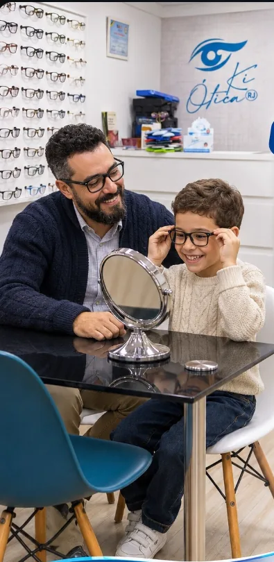
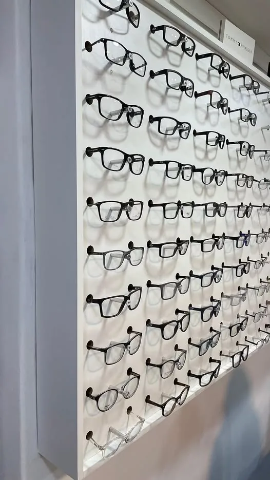
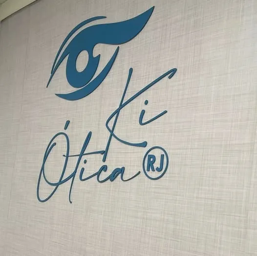
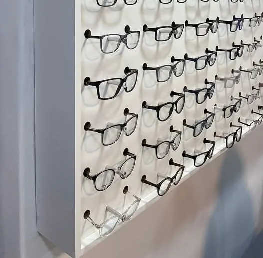

01
Atendimento humanizado e acolhedor
Aqui a conversa vem antes da armação. Você é recebido, ouvido e orientado sem pressa.
Duque de Caxias · RJ
Desde 1969 cuidando da sua visão, com preço, qualidade e atendimento no mesmo lugar: o calçadão da Nilo Peçanha.

Nossa história
Em 1969 abrimos as portas para cuidar da visão de Duque de Caxias. Hoje, 57 anos depois, e há 45 deles no calçadão da Nilo Peçanha, seguimos com o mesmo jeito: olhar para cada pessoa, ouvir o que ela precisa e indicar o que realmente serve.

Como cuidamos

Aqui a conversa vem antes da armação. Você é recebido, ouvido e orientado sem pressa.
Indicamos o que combina com o seu rosto, a sua rotina e o seu orçamento, sem empurrar o que você não precisa.

Do primeiro óculos da criança ao modelo de quem já sabe exatamente o que quer.
Traga a sua família.
Agendar pelo WhatsAppColeção solar
Armações solares para proteger o olhar com elegância, escolhidas junto com você e sem fazer o orçamento perder o brilho.
Ver óculos de solConforto nas telas
Quem confia
Atendimento excelente com uma qualidade indiscutível, que só Ki Ótica tem. Mais de 15 anos frequentamos essa ótica, pois é um local que eu indico de olhos fechados.
Melhor atendimento de Duque de Caxias. Sempre que preciso sou atendido da melhor forma, ótimo preço, sempre tem um orçamento que cabe no bolso.
Foi excelente. Confiança é tudo. Já fiz aqui o melhor óculos da minha vida, pois meu problema é complexo.
Visite a Ki Ótica